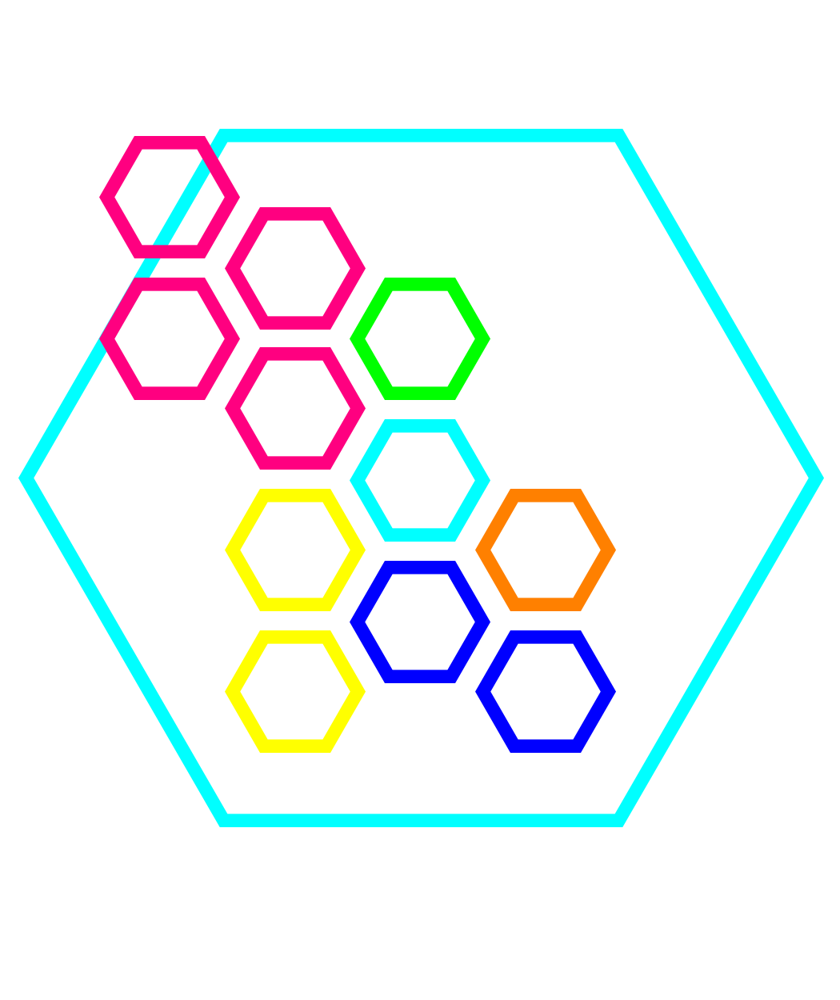

This application will track your browsing and data usage so that it can inform you of time spent on websites.The intention is to make you aware of how unproductive you are so that you can change your behavior and be more productive. The visualiser on the main page will show you the most used/visited websites as usage nodes so that you know if you have spent too long on a website. You will know if you have spent too long on a website when the node for that website goes outside of the large hexagon.
From this image above, the website indicated by pink has been visited a lot today and the other nodes have only been used little to moderate time today. The user can see that the pink is the largest node and also goes outside the hexagon which means they have spent to much time on that website today, the correct response from the user is to stop or minimalise the use of such website. This will hopefully make them more productive by informing them if they have wasted too much time on websites.
It requires the user to have self control and regulate thier usage. As an addition to displaying the data, the website could inform you how much time you have left on the website and then block usage of the websites that go over the limit.